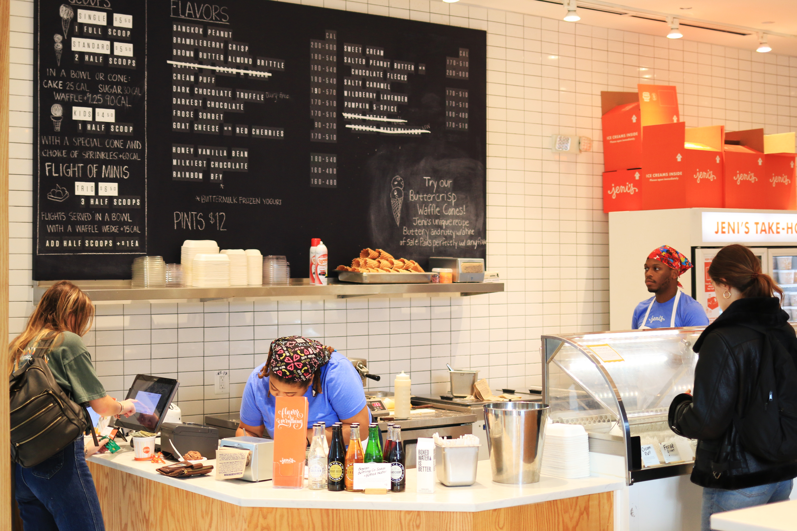
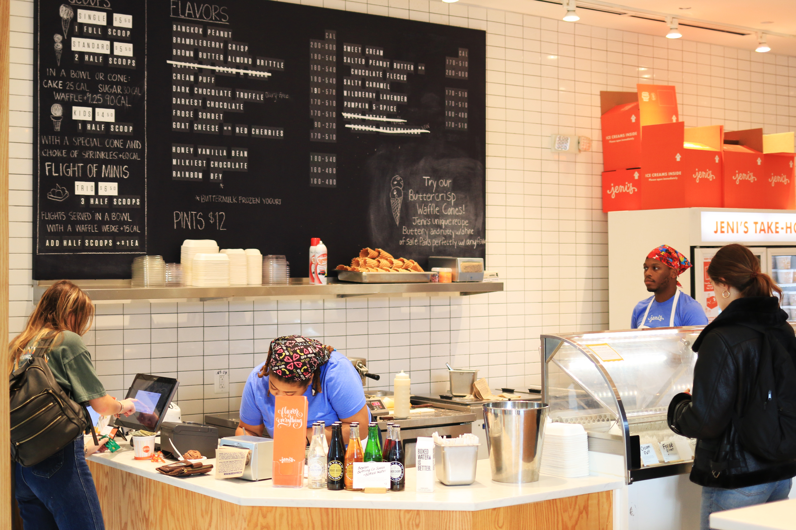

Henry Heo I Project2 I Spencer Nelson I GD2 Fall 2018
This project is designing and developing web pages for a collaborative / interactive storytelling project presenting a day in the life of a MICA Graphic Design student. This project is adapted from by Mark Sanders. Enjoy while viewing!